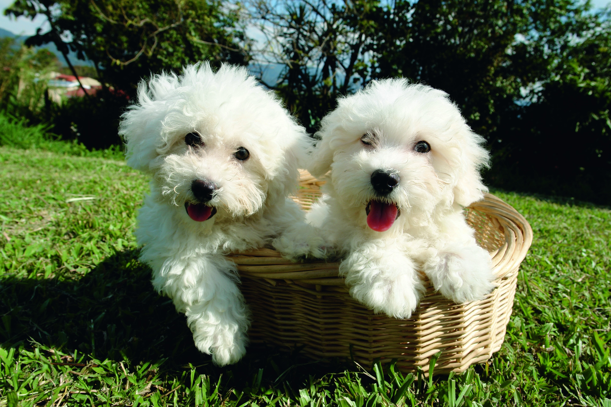

Discover the charm and joy of Bichon Frise dogs. They are known for their friendly and playful nature.
Determining the "best" dog breed is subjective and depends on individual preferences, lifestyle, and needs. People may consider Bichon Frise to be a great breed for several reasons: Affectionate and Sociable: Bichon Frises are known for their friendly and affectionate nature. They typically enjoy spending time with their owners and are often good with children and other pets. Intelligence: Bichons are considered to be intelligent dogs, making them trainable and adaptable to various environments. They often enjoy learning new tricks and commands. Hypoallergenic Coat: Bichon Frises have a curly, hypoallergenic coat that sheds minimally, which can be beneficial for individuals with allergies. Compact Size: Their small
Have questions or want to learn more? Reach out to us!